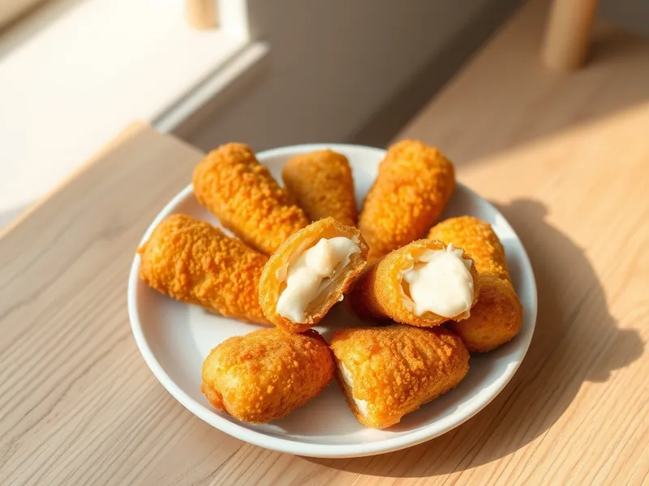

Сырные палочки из моцареллы в панировке
Брусочки моцареллы в хрустящей двойной панировке, которые тянутся при надкусывании
50 мин4 порц.463 ккал на порциюБ 23 · Ж 29 · У 28Американская кухня
Открыть в приложении: порции, таймеры, список покупок
Продукты на 4 порц.
- Моцарелла300 г
- Яйцо куриное2 шт
- Мука пшеничная2 ст. л.
- Панировочные сухари100 г
- Сушёные травы по желанию0,5 ч. л.
- Соль1 щеп.
- Растительное масло40 мл
Как готовить
- Нарежьте моцареллу брусками 1,5 на 1,5 см длиной 7 см и обсушите салфеткой.
- Взбейте яйца с солью, сухари смешайте с травами.
- Обваляйте каждый брусок в муке, затем в яйце и в сухарях, ещё раз в яйце и в сухарях.
- Уберите палочки в морозилку на 30 минут, чтобы сыр не вытек при жарке.
- Разогрейте масло слоем 1,5 см в сотейнике на среднем огне.
- Обжарьте палочки небольшими партиями по 1-2 минуты до золотистой корочки, переворачивая.
- Выложите на бумажное полотенце и подавайте горячими.
Совет. Двойная панировка и заморозка обязательны: без них сыр плавится раньше, чем схватится корочка, и вытекает в масло.